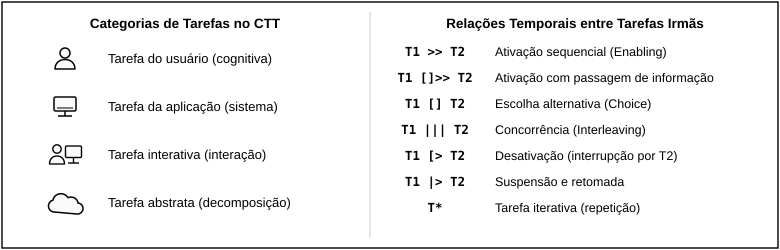

Tabela de Contribuição
| Membro | Contribuição |
|---|---|
| Daniel da Silva Batista | Concepção, estruturação e elaboração integral das 3 Listas de Verificação de Inspeção da Etapa 4 (Lista de Verificação de HTA com 10 itens, Lista de Verificação de CTT com 10 itens em 3 blocos e Lista de Verificação de Storyboard com 20 itens em 5 blocos), fundamentadas em Barbosa et al. (2021) e Preece, Rogers e Sharp (2005). |
| Gemini | Apoio na organização e diagramação Markdown (conforme Política de IA). |
Fonte: Daniel da Silva Batista (2026).
Listas de Verificação para Inspeção — Etapa 4 (HTA, CTT e Storyboard)
1. Introdução e Orientações de Aplicação
Este artefato reúne os três instrumentos normativos de inspeção por lista de verificação (checklists) elaborados pelo Grupo 07 para a avaliação e verificação cruzada dos modelos de Análise de Tarefas (HTA e CTT) e dos Storyboards do projeto PCI Concursos (pciconcursos.com.br), servindo como base metodológica para os planejamentos da Etapa 4 e preparando o terreno para a execução das inspeções e consolidação dos relatos na Etapa 5:
- Lista de Verificação para Análise Hierárquica de Tarefas (HTA) — 10 itens voltados à estrutura hierárquica, formulação do objetivo, decomposição mutuamente exclusiva e exaustiva, notação gráfica, numeração posicional, planos com operadores lógicos, critério de parada e representação tabular (Barbosa et al., 2021);
- Lista de Verificação para Árvores de Tarefas Concorrentes (CTT) — 10 itens organizados em 3 blocos (Bloco I: Estrutura do modelo e classificação nos 4 tipos; Bloco II: Relações e operadores temporais entre tarefas irmãs; Bloco III: Alcance e limitações da notação quanto ao tratamento de erros) (Barbosa et al., 2021);
- Lista de Verificação para Storyboard — 20 itens organizados em 5 blocos (Bloco I: Caracterização do storyboard como protótipo; Bloco II: Articulação com os cenários; Bloco III: Conteúdo dos quadros e técnica de esboço; Bloco IV: Uso no processo de design; Bloco V: Limitações, concessões e complementos) (Preece, Rogers & Sharp, 2005, Cap. 8; Barbosa et al., 2021).
1.1 Critérios de Julgamento
Cada pergunta de verificação é autocontida e deve ser respondida pelo inspetor com uma única marcação entre as três opções padronizadas:
- Conforme (
☑ Conforme) — O artefato inspecionado atende integralmente ao critério estabelecido na literatura; - Não conforme (
☑ Não conforme) — O artefato viola o critério ou omite elemento obrigatório (todo item classificado como Não conforme gera obrigatoriamente um registro de problemaPAT-nnouPSB-nnno Relato dos Resultados); - Não se aplica (
☑ Não se aplica) — O critério avalia uma condição ou operador específico que legitimamente não ocorre no escopo daquela tarefa ou narrativa.
2. Lista de Verificação para HTA (10 Itens)
A Tabela 1 apresenta os 10 itens de verificação aplicados a cada modelo de Análise Hierárquica de Tarefas (HTA), elaborados a partir de Barbosa et al. (2021, Cap. 6 / Cap. 8) e alinhados ao Planejamento da Avaliação da Análise de Tarefas (Tabela 8) e ao Planejamento do Relato da Análise de Tarefas (Tabela 2).
Tabela 1: Lista de Verificação para Análise Hierárquica de Tarefas (HTA)
| ID | Dimensão Verificada | Pergunta de Verificação | Fonte / Fundamentação |
|---|---|---|---|
| HTA-01 | Formulação do Objetivo | O objetivo principal da tarefa (nível 0) foi identificado antes das ações operacionais e está formulado como um estado ou meta que o usuário deseja atingir (verbo no infinitivo + objeto)? |
Barbosa et al. (2021, Cap. 8, Seção de HTA); Diaper (2004). |
| HTA-02 | Estrutura Hierárquica | A tarefa foi decomposta de forma hierárquica coerente, desmembrando o objetivo de alto nível (0) em subobjetivos intermediários (1., 2....) e estes em operações concretas nos níveis inferiores (1.1., 1.2., 1.2.1.)? |
Barbosa et al. (2021, Cap. 8, Fig. 8.1 e Fig. 8.2). |
| HTA-03 | Exclusividade e Exaustão | Os subobjetivos subordinados a um mesmo objetivo-pai são mutuamente exclusivos (sem sobreposição de escopo entre irmãos) e coletivamente exaustivos (juntos cumprem 100% do objetivo-pai, sem etapas ocultas)? | Barbosa et al. (2021, Cap. 8, Passos da HTA). |
| HTA-04 | Notação Gráfica de Objetivos e Operações | O diagrama diferencia visualmente os objetivos não terminais (retângulos simples que possuem filhos) das operações/nós-folha (retângulos com linha dupla horizontal na base, que não são mais decompostos)? | Barbosa et al. (2021, Cap. 8, Fig. 8.1 — Elementos de um diagrama HTA). |
| HTA-05 | Numeração Hierárquica Posicional | Cada nó do diagrama e da tabela recebe numeração hierárquica estritamente fiel à sua posição na árvore (0 para raiz; 1., 2. para nível 1; 1.1., 1.2. para filhos do nó 1.; 1.2.1., 1.2.2. para filhos do nó 1.2.)? |
Barbosa et al. (2021, Cap. 8, Fig. 8.2 — Exemplo de diagrama HTA). |
| HTA-06 | Presença Obrigatória de Planos | Todo objetivo que possui subobjetivos apresenta um plano explícito (p:) posicionado junto à linha vertical de decomposição, definindo a regra e a ordem de execução dos seus filhos diretos? |
Barbosa et al. (2021, Cap. 8, Fig. 8.1 e Fig. 8.2). |
| HTA-07 | Operadores Lógicos dos Planos | Os planos empregam corretamente a notação de operadores da HTA: sequência fixa (1 > 2), seleção/decisão condicional (1 / 2 com especificação da regra se...) ou paralelismo (1 + 2), referenciando apenas os filhos daquele nó? |
Barbosa et al. (2021, Cap. 8, Fig. 8.1 — Relações entre subobjetivos). |
| HTA-08 | Critério de Parada da Decomposição | A decomposição respeita um critério claro de parada (como a regra $P \times C$ ou o foco no o quê o usuário realiza sem descer a microações mecânicas irrelevantes), mantendo nível de abstração adequado ao reprojeto? | Barbosa et al. (2021, Cap. 8, Passos da HTA); Annett & Duncan (1967). |
| HTA-09 | Especificação de Input, Ação e Feedback | As operações e objetivos de nível inferior estão acompanhados da especificação de input (circunstância de ativação), ação e feedback (resposta do sistema que indica o atingimento do objetivo)? | Barbosa et al. (2021, Cap. 8, Fig. 8.1 e Tabela 8.1). |
| HTA-10 | Representação em Tabela com Problemas e Recomendações | Além do diagrama hierárquico, o artefato apresenta a representação complementar em tabela contendo os objetivos/operações, planos, input, feedback, problemas/dificuldades identificados e recomendações de design? | Barbosa et al. (2021, Cap. 8, Tabela 8.1 — Representação das tarefas da HTA em tabela). |
Fonte: Daniel da Silva Batista (2026), com base em BARBOSA et al. (2021).
3. Lista de Verificação para CTT (10 Itens em 3 Blocos)
A Tabela 2 apresenta os 10 itens de verificação aplicados a cada modelo de Árvores de Tarefas Concorrentes (CTT), estruturados nos três blocos normativos definidos no Planejamento da Avaliação da Análise de Tarefas (Tabela 8) e no Planejamento do Relato da Análise de Tarefas (Tabela 3), com base em Paternò (1999) e Barbosa et al. (2021, Cap. 8).
Tabela 2: Lista de Verificação para Árvores de Tarefas Concorrentes (CTT)
| Bloco | ID | Pergunta de Verificação | Fonte / Fundamentação |
|---|---|---|---|
| Bloco I — Estrutura do modelo e classificação das tarefas (Itens 1 a 2) | CTT-01 | As tarefas foram corretamente classificadas e representadas com os ícones canônicos dos quatro tipos do CTT: tarefa do usuário (pessoa — ação cognitiva/física fora do sistema), tarefa do sistema (computador — processamento interno sem diálogo), tarefa interativa (pessoa + tela — diálogo direto na interface) ou tarefa abstrata (nuvem — agrupamento)? | Barbosa et al. (2021, Cap. 8, Fig. 8.3 — Tipos de tarefas no CTT); Paternò (1999). |
| Bloco I — Estrutura do modelo e classificação das tarefas (Itens 1 a 2) | CTT-02 | A decomposição hierárquica está coerente entre tarefas superiores e subordinadas, garantindo que a raiz e todos os nós intermediários (que possuem filhos) sejam tarefas abstratas (nuvem) e que nenhuma tarefa abstrata apareça como nó-folha no nível mais baixo? | Barbosa et al. (2021, Cap. 8, Fig. 8.3 e Fig. 8.5 — Exemplo de modelo CTT). |
| Bloco II — Relações temporais entre tarefas irmãs (Itens 3 a 8) | CTT-03 | As relações de ativação sequencial (T1 >> T2) e de ativação com passagem de informação (T1 []>> T2) indicam corretamente quando a segunda tarefa depende do término da primeira e quando há transferência obrigatória de dados produzidos entre elas? |
Barbosa et al. (2021, Cap. 8, Fig. 8.4 — Relações no CTT). |
| Bloco II — Relações temporais entre tarefas irmãs (Itens 3 a 8) | CTT-04 | As escolhas entre tarefas alternativas foram representadas com o operador de escolha (T1 [] T2) nos pontos em que duas opções estão disponíveis, mas o início de uma desabilita a outra no ciclo atual? |
Barbosa et al. (2021, Cap. 8, Fig. 8.4 e Fig. 8.5). |
| Bloco II — Relações temporais entre tarefas irmãs (Itens 3 a 8) | CTT-05 | Tarefas simultâneas ou realizáveis em qualquer ordem (sem dependência de dados entre si) foram identificadas como concorrentes por meio do operador de concorrência (T1 ||| T2)? |
Barbosa et al. (2021, Cap. 8, Fig. 8.4 e Fig. 8.5). |
| Bloco II — Relações temporais entre tarefas irmãs (Itens 3 a 8) | CTT-06 | Quando tarefas concorrentes precisam trocar informações ou sincronizar estados durante sua execução paralela, essa relação foi explicitamente representada pelo operador de concorrência e comunicação (T1 |[]| T2)? |
Barbosa et al. (2021, Cap. 8, Fig. 8.4 — Tarefas concorrentes e comunicantes). |
| Bloco II — Relações temporais entre tarefas irmãs (Itens 3 a 8) | CTT-07 | As tarefas que podem ser executadas em qualquer ordem, mas sem sobreposição temporal (uma vez iniciada, precisa terminar antes que a outra comece), utilizam corretamente o operador de independência (T1 |=| T2)? |
Barbosa et al. (2021, Cap. 8, Fig. 8.4 — Tarefas independentes). |
| Bloco II — Relações temporais entre tarefas irmãs (Itens 3 a 8) | CTT-08 | As relações de interrupção distinguem adequadamente a desativação definitiva sem retorno (T1 [> T2, ex.: encerrar ou cancelar tarefa) da suspensão temporária com retomada (T1 |> T2, ex.: ajustar filtro e retomar do ponto em que parou)? |
Barbosa et al. (2021, Cap. 8, Fig. 8.4 — Desativação e Suspensão/Retomada). |
| Bloco III — Alcance e limitações da notação (Itens 9 a 10) | CTT-09 | O modelo explicita com clareza as relações temporais entre todas as tarefas irmãs por linha horizontal pontilhada e indica operadores unários de opcionalidade ([T]) e iteratividade (T*) quando aplicáveis ao fluxo real do usuário? |
Barbosa et al. (2021, Cap. 8, Fig. 8.4 e Fig. 8.5). |
| Bloco III — Alcance e limitações da notação (Itens 9 a 10) | CTT-10 | Considerando os limites da notação gráfica do CTT quanto à modelagem detalhada de prevenção e tratamento de erros humanos, tais mecanismos e fluxos de exceção estão devidamente registrados na documentação complementar do artefato (tabelas analíticas, HTA ou cenários)? | Barbosa et al. (2021, Cap. 8); Planejamento da Avaliação (Seção 6.7). |
Fonte: Daniel da Silva Batista (2026), com base em BARBOSA et al. (2021) e PATERNÒ (1999).
4. Lista de Verificação para Storyboard (20 Itens em 5 Blocos)
A Tabela 3 apresenta os 20 itens de verificação aplicados a cada Storyboard individual da equipe, estruturados nos cinco blocos normativos definidos no Planejamento da Avaliação do Storyboard (Tabela 7 e Tabela 8) e no Planejamento do Relato dos Resultados do Storyboard (Tabela 2), elaborados a partir do Capítulo 8 de Preece, Rogers e Sharp (2005, p. 262–265) e de Barbosa et al. (2021, Cap. 8 e Cap. 11).
Tabela 3: Lista de Verificação para Storyboard (20 Itens em 5 Blocos)
| Bloco | ID | Pergunta de Verificação | Fonte / Fundamentação |
|---|---|---|---|
| Bloco I — Caracterização do storyboard como protótipo (Itens 1 a 4) | SB-01 | O artefato caracteriza-se efetivamente como um protótipo de baixa fidelidade, construído em formato visual simplificado sem empregar capturas de tela finais codificadas ou interfaces de alta fidelidade? | Preece, Rogers & Sharp (2005, Cap. 8, Seção 8.2, p. 262–263). |
| Bloco I — Caracterização do storyboard como protótipo (Itens 1 a 4) | SB-02 | O storyboard consiste em uma série sequencial de desenhos/quadros que mostra como o usuário pode progredir em uma tarefa utilizando o produto em desenvolvimento na ordem esperada? | Preece, Rogers & Sharp (2005, Cap. 8, Seção 8.2.1 — Storyboarding, p. 263). |
| Bloco I — Caracterização do storyboard como protótipo (Itens 1 a 4) | SB-03 | A finalidade do storyboard como instrumento de concepção e verificação preliminar do modelo conceitual da tarefa está explicitamente declarada no documento? | Preece, Rogers & Sharp (2005, Cap. 8, p. 263); Barbosa et al. (2021, Cap. 11). |
| Bloco I — Caracterização do storyboard como protótipo (Itens 1 a 4) | SB-04 | O storyboard retrata exemplos de telas/esboços de interface articulados à ação humana (e não um mero fluxograma abstrato nem apenas telas isoladas sem ator)? | Preece, Rogers & Sharp (2005, Cap. 8, p. 263). |
| Bloco II — Articulação com os cenários (Itens 5 a 8) | SB-05 | O storyboard é utilizado em conjunto direto com um cenário escrito previamente especificado no projeto (Cenários), mantendo fidelidade à situação-problema do usuário? | Preece, Rogers & Sharp (2005, Cap. 8, p. 263). |
| Bloco II — Articulação com os cenários (Itens 5 a 8) | SB-06 | A sequência visual acrescenta mais detalhes contextuais ao cenário escrito (ambiente físico, postura, dispositivo, reação emocional), permitindo visualizar a situação de uso real? | Preece, Rogers & Sharp (2005, Cap. 8, p. 263). |
| Bloco II — Articulação com os cenários (Itens 5 a 8) | SB-07 | Existe rastreabilidade explícita e inequívoca entre o storyboard, a persona protagonista (Personas), o cenário e a tarefa modelada na Análise de Tarefas? | Barbosa et al. (2021, Cap. 8); Plano de Ensino (Sales, 2026, Item 19). |
| Bloco II — Articulação com os cenários (Itens 5 a 8) | SB-08 | A narrativa visual preserva o arco completo do cenário: início (gatilho/motivação e dor atual), meio (interação passo a passo com a solução proposta) e fim (desfecho e satisfação da necessidade)? | Preece, Rogers & Sharp (2005, Cap. 8, p. 263); Klemmer (2012). |
| Bloco III — Conteúdo dos quadros e técnica de esboço (Itens 9 a 12) | SB-09 | Cada quadro (frame) descreve com precisão um passo específico da sequência da tarefa, sem omitir etapas essenciais da decomposição HTA/CTT nem incluir passos excedentes? | Preece, Rogers & Sharp (2005, Cap. 8, Fig. 8.3, p. 263–264). |
| Bloco III — Conteúdo dos quadros e técnica de esboço (Itens 9 a 12) | SB-10 | A técnica de sketching (esboço) apoia-se em símbolos e traços simples e consistentes (figuras humanas esquemáticas, ícones básicos, setas indicativas), dispensando detalhamento artístico complexo? | Preece, Rogers & Sharp (2005, Cap. 8, Seção 8.2.2 — Sketching, p. 264). |
| Bloco III — Conteúdo dos quadros e técnica de esboço (Itens 9 a 12) | SB-11 | Os desenhos permitem identificar visualmente quem é a pessoa retratada, quais objetos/dispositivos ela está usando (celular ou computador) e onde ela está (ambiente físico)? | Preece, Rogers & Sharp (2005, Cap. 8, p. 263–264); Roteiro de Entrevista (Item 11). |
| Bloco III — Conteúdo dos quadros e técnica de esboço (Itens 9 a 12) | SB-12 | Cada quadro possui uma legenda descritiva clara (e transcrição textual acessível) e o conjunto visual permite ao leitor reconhecer e nomear a tarefa representada? | Preece, Rogers & Sharp (2005, Cap. 8, p. 263); Roteiro de Entrevista (Item 12). |
| Bloco IV — Uso no processo de design (Itens 13 a 16) | SB-13 | O storyboard foi elaborado no momento metodológico correto do ciclo de Engenharia de Usabilidade (Nível 1 — fase inicial/conceitual, antes da prototipação em papel de Nível 2)? | Preece, Rogers & Sharp (2005, Cap. 8, p. 262); Mayhew (1999). |
| Bloco IV — Uso no processo de design (Itens 13 a 16) | SB-14 | O storyboard foi (ou está planejado e preparado para ser) exibido a usuários potenciais representativos do perfil-alvo para coletar críticas e validar a compreensão da história? (Verificação de fechamento pós-entrevista) | Preece, Rogers & Sharp (2005, Cap. 8, p. 263); Planejamento (Seção 6.7). |
| Bloco IV — Uso no processo de design (Itens 13 a 16) | SB-15 | Os quadros oferecem elementos suficientes para que a equipe de projeto e os participantes percorram mentalmente (walkthrough) e simulem a interação com o produto? | Preece, Rogers & Sharp (2005, Cap. 8, p. 263). |
| Bloco IV — Uso no processo de design (Itens 13 a 16) | SB-16 | O artefato é tratado de forma aberta à iteração e modificação, prevendo o registro de alterações sugeridas pelos usuários e a evolução para nova versão quando necessário? (Verificação de fechamento pós-entrevista) | Preece, Rogers & Sharp (2005, Cap. 8, p. 262–264); Planejamento (Seção 6.7). |
| Bloco V — Limitações, concessões e complementos (Itens 17 a 20) | SB-17 | As limitações metodológicas do storyboard (não testar navegabilidade real, tempo de execução nem detalhes finos de layout) estão explicitamente reconhecidas na documentação? | Preece, Rogers & Sharp (2005, Cap. 8, Tabela 8.1, p. 265); Barbosa et al. (2021, p. 303). |
| Bloco V — Limitações, concessões e complementos (Itens 17 a 20) | SB-18 | As concessões de prototipação (trade-offs) — priorizar rapidez, baixo custo e foco no contexto em detrimento da fidelidade visual de componentes — foram respeitadas? | Preece, Rogers & Sharp (2005, Cap. 8, Seção 8.2.5 — Concessões na prototipação, p. 265). |
| Bloco V — Limitações, concessões e complementos (Itens 17 a 20) | SB-19 | O storyboard articula-se com os artefatos complementares do projeto (tabelas de correspondência com subobjetivos HTA e tarefas CTT) para cobrir regras que o desenho estático não expressa sozinho? | Barbosa et al. (2021, Cap. 8); Preece, Rogers & Sharp (2005, Cap. 8). |
| Bloco V — Limitações, concessões e complementos (Itens 20) | SB-20 | O storyboard é utilizado estritamente como material de exploração conceitual para orientar as decisões do próximo nível (Protótipo de Papel), sem ser tomado como especificação definitiva? | Preece, Rogers & Sharp (2005, Cap. 8, p. 262–265); Barbosa et al. (2021). |
Fonte: Daniel da Silva Batista (2026), com base em PREECE, ROGERS & SHARP (2005, Cap. 8, p. 262–265) e BARBOSA et al. (2021).
5. Fundamentação Visual das Listas de Verificação
As Figuras 1 e 2 apresentam as referências visuais canônicas extraídas da literatura de base da disciplina (Barbosa et al., 2021, Cap. 8) que fundamentam os critérios de notação das Listas de Verificação de HTA e de CTT.
Figura 1: Elementos Canônicos e Relações de Planos no Diagrama HTA (Itens HTA-01 a HTA-10)

Fonte: BARBOSA et al. (2021, Cap. 8, Figura 8.1).
Figura 2: Tipos de Tarefas e Operadores Temporais no Modelo CTT (Itens CTT-01 a CTT-10)

Fonte: Adaptado de BARBOSA et al. (2021, Cap. 8, Figuras 8.3 e 8.4) e PATERNÒ (1999).
6. Referências Bibliográficas
[1] ANNETT, John; DUNCAN, Keith D. Task Analysis and training design. Occupational Psychology, v. 41, p. 211–221, 1967.
[2] BARBOSA, Simone D. J.; SILVA, Bruno S. da. Interação Humano-Computador. 1. ed. Rio de Janeiro: Elsevier, 2010.
[3] BARBOSA, Simone Diniz Junqueira et al. Interação Humano-Computador e Experiência do Usuário. Autopublicação, 2021. Cap. 8 (Organização do Espaço de Problema) e Cap. 11 (Planejamento da Avaliação de IHC).
[4] FAGAN, Michael E. Design and Code Inspections to reduce errors in program development. IBM Systems Journal, v. 15, n. 3, p. 182–211, 1976.
[5] PATERNÒ, Fabio. Model-Based Design and Evaluation of Interactive Applications. London: Springer-Verlag, 1999.
[6] PREECE, Jennifer; ROGERS, Yvonne; SHARP, Helen. Design de Interação: além da interação homem-computador. Porto Alegre: Bookman / São Paulo: Érica, 2005. Cap. 8 (Design, Prototipação e Construção, p. 262–265).
[7] SALES, André Barros de. Plano de Ensino: Interação Humano Computador. Brasília: Universidade de Brasília, FGA/UnB, 2026.
Histórico de Versões
| Versão | Data | Descrição | Autor(es) | Revisor(es) |
|---|---|---|---|---|
1.0 |
23/10/2026 | Elaboração e consolidação das 3 Listas de Verificação para Inspeção da Etapa 4: HTA (10 itens), CTT (10 itens em 3 blocos) e Storyboard (20 itens em 5 blocos), com fundamentação na literatura e critérios de julgamento. | Daniel da Silva Batista | — |